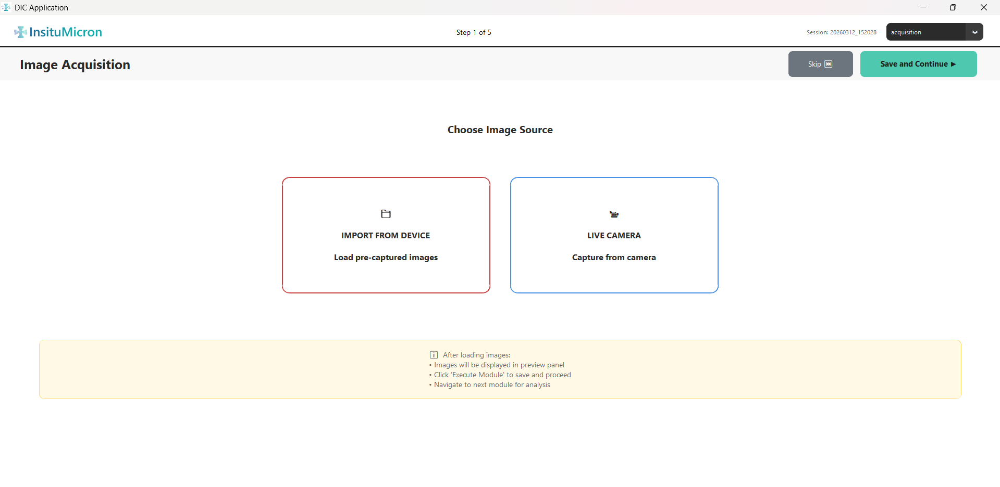
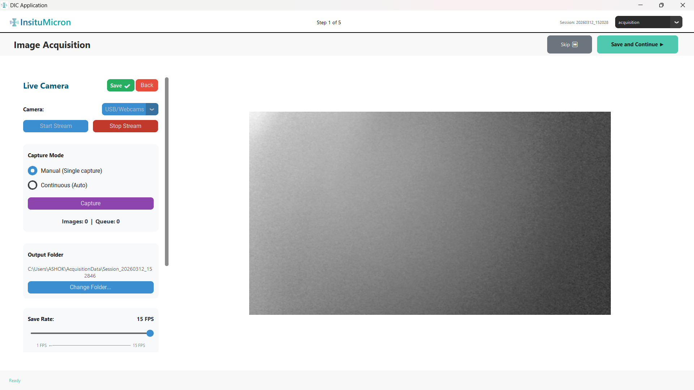
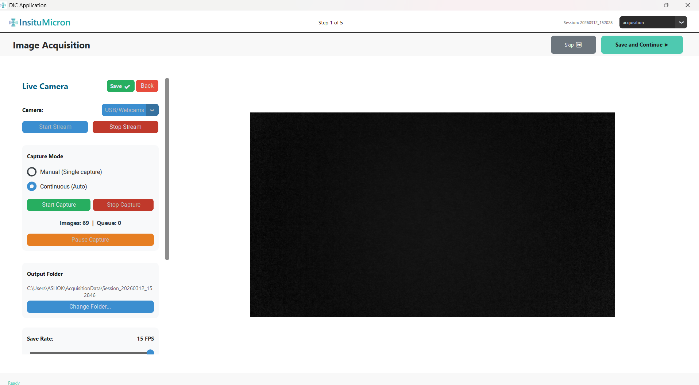
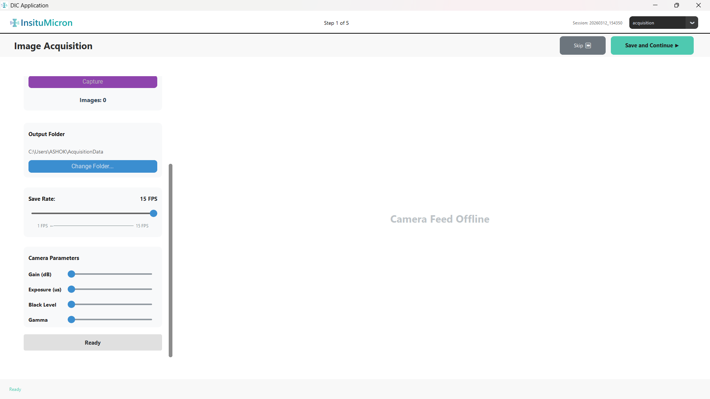
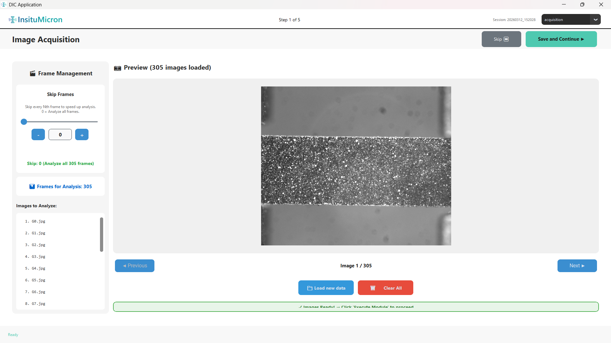

Module 1
Image Acquisition
Load or capture the images that will be analyzed by DIC. This is the first module in the analysis workflow. Images can be imported from disk or captured directly from a connected FLIR or USB camera.

[Screenshot: Acquisition source selection screen — two large buttons]
'">
Figure 1.1 — Image Acquisition source selection screen
1.1 Source Selection Screen
When you enter the Image Acquisition module, you see two large buttons side by side. Choose the method appropriate to your setup:
Option A
IMPORT FROM DEVICE
Opens the Windows file browser so you can select images already saved on your computer. Supports .jpg, .png, .tif, .bmp and other standard image formats. Select multiple files at once.
Option B
LIVE CAMERA
Opens the built-in camera acquisition panel, supporting FLIR hardware cameras (via PySpin) and standard USB/webcam sources (via OpenCV). Captures images directly for immediate use.
After loading or capturing images, a preview panel will appear. You must click Execute Module in the main sidebar to confirm the images and move to the next step in the workflow.
1.2 Live Camera Panel
Clicking LIVE CAMERA replaces the source selection screen with the full embedded camera acquisition panel. The panel is divided into a left control column (scrollable) and a right camera feed area.

[Screenshot: FLIR camera panel — left controls, right live feed]
'">
Figure 1.2 — Live Camera panel layout
At the top of the left control column:
| Control | Description |
|---|
| Live Camera (label) | Confirms you are in camera capture mode. |
| Save ✔ (green button) | Closes the camera panel, saves all captured images to the session, and automatically triggers module execution. This is how you finish a camera capture session. |
| Back (red button) | Cancels the camera session entirely and returns to the source selection screen. No images are saved. |
| Camera: dropdown | Select the camera source before starting the stream. Options: FLIR Camera (hardware FLIR via USB3/GigE) or USB/Webcams (any standard webcam recognized by OpenCV). |
Stream Controls
| Button | State | Action |
|---|
| Start Stream | Enabled when camera is selected | Initializes and opens the selected camera. The live feed appears in the right panel. The Camera dropdown becomes locked once streaming starts. |
| Stop Stream (red) | Enabled only while streaming | Disconnects the camera and clears the live feed. Any capture mode in progress (continuous) is also stopped. The dropdown becomes selectable again. |
| Status badge (bottom of left panel) | Always visible | Shows the current state in color: grey = Ready, orange = Starting…, green = ● LIVE | FPS: 30.00 or Camera Active, red = Error. |
Capture Mode
After the stream is active, choose how images are recorded:
| Mode | Button(s) | How It Works |
|---|
| Manual (Single capture) — default | Capture (purple) | Each click of the Capture button saves one frame from the current live feed. Use for deliberate, sequenced captures (e.g., loading steps with pauses between them). |
| Continuous (Auto) | Start Capture (green), Stop Capture (red), Pause Capture (orange) | Saves frames automatically at the rate defined by the Save Rate slider. Start Capture begins recording; Pause Capture temporarily halts saving without stopping the stream; Resume Capture (same button, toggled) restarts; Stop Capture ends the session. |

[Screenshot: Continuous capture mode — Start/Stop/Pause buttons active, image counter visible]
'">
Figure 1.3 — Continuous capture mode with image counter
The Images counter at the bottom of the Capture Mode section shows the running total: "Images: N | Queue: N" — the left number is saved frames; the right is frames pending disk-write.
Save Rate & Output Folder
| Control | Description |
|---|
| Save Rate label (e.g., "15 FPS") | Displays the currently set capture rate for continuous mode. |
| FPS Slider (range: 1–15 FPS) | Sets how many images per second are written to disk during continuous capture. 1 FPS saves one image every second; 15 FPS saves fifteen per second. Higher rates produce larger datasets. Match this to the speed of your mechanical test. |
| Output Folder path label | Displays the current save directory. Default: ~/AcquisitionData/[session_timestamp]/. A new session subfolder is created automatically each time you start capturing. |
| Change Folder… (button) | Opens a Windows folder browser to select a different root save location. Any existing in-progress session is closed and reset when the folder is changed. |
Camera Parameters (Advanced)
These controls appear at the bottom of the left panel and are disabled until the camera stream is active. Once the camera connects and reports its capability limits, the sliders become interactive.

[Screenshot: Camera parameters — Gain, Exposure, Black Level, Gamma sliders]
'">
Figure 1.4 — Camera Parameters section (enabled after streaming starts)
| Parameter | Control | Notes |
|---|
| Gain (dB) | Slider + Auto checkbox | Amplifies the camera sensor signal. Higher gain increases image brightness but also increases noise. Tick Auto to let the camera's automatic gain control (AGC) manage this dynamically. For DIC, fixed gain is generally preferred to ensure consistent image intensity. |
| Exposure (µs) | Slider + Auto checkbox | Controls how long the sensor collects light per frame. Longer exposure = brighter image but increased motion blur risk. For moving specimens, keep exposure short. Tick Auto for automatic exposure control (AEC). |
| Black Level | Slider only | Adjusts the baseline brightness offset applied to the raw sensor signal. This rarely needs adjustment from its default. Only modify if images appear to have a non-zero background intensity floor. |
| Gamma | Slider only | Applies a tone-curve correction. At the default value (1.0), no correction is applied. For DIC image correlation, it is generally recommended to leave gamma at its default to avoid non-linear intensity distortions. |
The numeric readout to the right of each slider shows the current value in real camera units (dB, µs, or dimensionless). This value is updated live as you drag the slider.
For DIC, consistent and repeatable lighting is more important than brightness. Set Gain and Exposure to fixed values that produce well-exposed (not saturated) images, and disable Auto mode for both.
1.3 Import From Device
Clicking IMPORT FROM DEVICE opens a Windows file selection dialog. Select one or more image files (hold Ctrl or Shift for multi-select) and click Open. The dialog closes and a progress screen appears:
| UI Element | Purpose |
|---|
| Importing Images… (title) | Confirms the import is in progress. |
| Progress Bar (green fill) | Advances from 0% to 100% as each image is loaded into memory. |
| "Loading X / Y images…" label | Shows the numerical progress count (e.g., "Loading 23 / 150 images…"). |
| Current filename (small text) | Shows the name of the file currently being processed. |
| Cancel (button) | Aborts the import. Any already-loaded images are discarded and the source selection screen is shown again. |
1.4 Preview Panel (After Loading)
When loading is complete — whether by import or camera — the screen switches to a two-panel preview layout. This layout is shown when more than 10 images are loaded.

[Screenshot: Two-panel preview — left frame management, right image preview]
'">
Figure 1.5 — Image Acquisition preview panel (two-panel layout for large datasets)
Left Panel — Frame Management
| Control | Description |
|---|
| Frame Management (section header) | Groups the controls for selecting which frames will be sent to analysis. |
| Skip Frames slider | Sets the decimation factor N. The analysis will process every Nth frame only. Skip = 0 means analyze all frames. Example: Skip = 2 analyzes frames 1, 3, 5, 7… halving the dataset. Useful for high-speed camera data where not every frame is needed. |
| – button | Decrements the skip value by 1. |
| Number input box | Type a skip value directly, then press Enter or click elsewhere. |
| + button | Increments the skip value by 1. |
| Skip info label (green text) | Dynamically updates to confirm the effect, e.g., "Skip: 2 (Analyze 60 of 120 frames)". |
| Frames for Analysis (count) | Shows the total number of frames that will be passed to the DIC engine after applying the skip setting. |
| Images to Analyze (scrollable file list) | A scrollable list of the filenames of all frames selected for analysis. Reflects the skip setting — only the files that will actually be analyzed are shown. |
Right Panel — Image Preview
| Control | Description |
|---|
| Preview area | Displays the currently selected image at a scaled resolution. Use the navigation buttons below to browse the sequence. |
| ◀ Previous button | Navigates to the previous image in the loaded sequence. Disabled when you are on the first image. |
| "Image X / Y" counter | Shows your current viewing position within the full loaded stack (e.g., "Image 12 / 150"). Note: this reflects your position in the raw stack, not the skip-filtered list. |
| Next ▶ button | Navigates to the next image. Disabled on the last image. |
| Load new data (button) | Discards all currently loaded images and re-opens the file browser (or source selection) so you can load a different set. The module state resets. |
| Clear All (button) | Removes all loaded images from memory and returns to the source selection screen (showing the two large Import / Live Camera buttons). |
| ✓ Images Ready! (green banner) | Shown once images are successfully loaded. This confirms the module has valid input data and is ready. Click Execute Module from the sidebar to save and proceed. |
Use the Skip Frames control for high-speed video data. Reducing the frame count speeds up subsequent analysis steps significantly without reducing the spatial quality of the results.